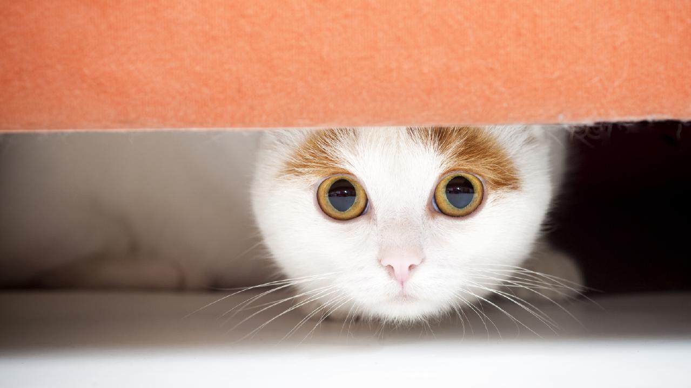

Язык тела кошек: как понять своего питомца
Кошки редко используют голос для общения друг с другом - в основном мяукание они изобрели специально для людей. Настоящие же мысли и чувства кошки выдают движениями тела, ушей и хвоста.
- Основные сигналы кошачьего тела:
- Хвост трубой - кошка счастлива, уверена в себе и полностью готова к дружелюбному общению.
- Махи хвостом из стороны в сторону - питомец сильно раздражён, злится, просит оставить его в покое.
- Топтание лапками - кошка чувствует себя в безопасности и демонстрирует крайний комфорт.